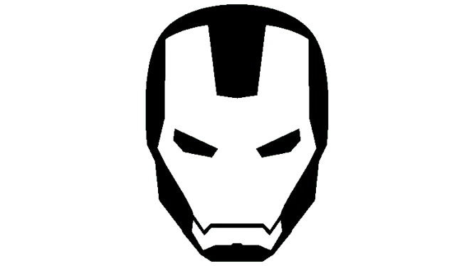
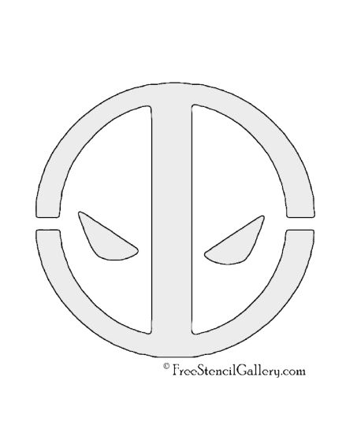

🕷️ Sentido arácnido – Una habilidad especial que le advierte del peligro cercano, como una
especie de sexto sentido.
🕸️ Lanza telarañas – Usa dispositivos llamados lanzarredes para crear telarañas, moverse entre
edificios y atrapar enemigos.
💪 Fuerza sobrehumana – A pesar de su apariencia delgada, tiene una fuerza muy superior a la de
un
humano normal.
🧠 Inteligencia y habilidades científicas – Es muy inteligente, especialmente en química y
tecnología; él mismo creó sus lanzarredes.
🧗 Agilidad y reflejos increíbles – Puede escalar paredes, saltar grandes distancias y moverse
con
rapidez impresionante.
🦸 Gran sentido de la responsabilidad – Su lema es "con gran poder viene una gran
responsabilidad",
y eso guía sus acciones como héroe.

Genio en ingeniería y ciencia: Tony Stark es un inventor brillante con conocimientos avanzados
en
física, robótica e inteligencia artificial.
Multimillonario: Es dueño de Industrias Stark, una poderosa empresa tecnológica y
armamentística.
Filántropo: A pesar de su arrogancia inicial, Stark dedica gran parte de su fortuna a causas
benéficas y al desarrollo de tecnología para el bien común.
Carismático y sarcástico: Tiene una personalidad fuerte, con un gran sentido del humor y una
actitud
confiada que a menudo se convierte en sarcasmo.
Portador de la armadura Iron Man: Su principal característica como superhéroe es la armadura
avanzada que le da habilidades como vuelo, superfuerza, y armamento de alta tecnología.
Evolución personal: A lo largo de la saga, Tony pasa de ser un empresario egocéntrico a un héroe
dispuesto a sacrificarse por los demás.

Fuerza sobrehumana: Hulk posee una fuerza casi ilimitada que aumenta proporcionalmente con su
nivel
de ira.
Transformación por ira: Bruce Banner se convierte en Hulk cuando se enoja o está bajo un estrés
extremo.
Regeneración acelerada: Tiene una capacidad de curación extremadamente rápida, lo que lo hace
muy
difícil de herir gravemente.
Durabilidad extrema: Hulk es prácticamente invulnerable a la mayoría de las armas convencionales
y
puede resistir condiciones extremas.
Dualidad de personalidad: Existe un conflicto constante entre la mente científica y racional de
Banner y la naturaleza impulsiva y salvaje de Hulk.
Científico brillante: Bruce Banner es un experto en radiación gamma y un científico de clase
mundial, especialmente en física y biología.

Factor curativo acelerado: Deadpool tiene una capacidad de regeneración extremadamente rápida,
que le permite curarse de casi cualquier herida o enfermedad, incluso regenerar extremidades.
Inmortalidad: Debido a su factor curativo y a ciertos eventos en los cómics, Deadpool no puede
morir de forma convencional.
Experto en combate: Es altamente entrenado en artes marciales, uso de armas de fuego y espadas,
siendo un combatiente letal cuerpo a cuerpo y a distancia.
Sentido del humor sarcástico: Deadpool es conocido por su humor negro, irreverente y constante
uso de chistes, incluso en medio del combate.
Rompe la cuarta pared: Es uno de los pocos personajes que es consciente de que está en un cómic
(o película), y habla directamente con el lector o espectador.
Pasado trágico: Aunque oculta su dolor con humor, su origen está marcado por sufrimiento,
experimentos crueles y una lucha interna constante.

Dios asgardiano: Thor es el hijo de Odín y proviene de Asgard, lo que le otorga poderes divinos
y una vida extremadamente larga.
Fuerza sobrehumana: Posee una fuerza colosal, capaz de levantar y destruir casi cualquier cosa,
superando a la mayoría de los héroes de Marvel.
Mjölnir (su martillo): Su arma principal, el martillo Mjölnir, solo puede ser levantado por
quienes sean "dignos", y le permite controlar el trueno, volar y canalizar energía.
Control del trueno y relámpago: Tiene la capacidad de manipular rayos y tormentas, lo que lo
hace muy poderoso en combate.
Valiente y honorable: Thor es un guerrero noble, con un fuerte sentido del deber, la justicia y
el honor, aunque a veces es impulsivo.
Desarrollo personal: A lo largo de su historia, evoluciona de ser un príncipe arrogante a un
líder sabio y sacrificado.
Super soldado: Gracias al suero del supersoldado, Steve posee fuerza, velocidad, agilidad y
resistencia muy superiores a las de un humano normal.
Líder nato: Es un estratega excepcional y un líder respetado por todos los Vengadores, conocido
por su capacidad para inspirar y tomar decisiones bajo presión.
Escudo indestructible: Su arma principal es un escudo hecho de vibranium, que usa tanto para
defenderse como para atacar, y lo maneja con gran habilidad.
Sentido del deber y la justicia: Tiene una moral firme, guiada por ideales de libertad, igualdad
y justicia, incluso cuando van en contra de las órdenes o del gobierno.
Valiente y sacrificado: Está dispuesto a arriesgar su vida por los demás sin dudarlo, mostrando
una valentía constante en el campo de batalla.
Origen humilde: Comenzó como un joven frágil y enfermizo con un gran corazón, lo que demuestra
que su verdadero poder está en su carácter, no solo en sus habilidades físicas.